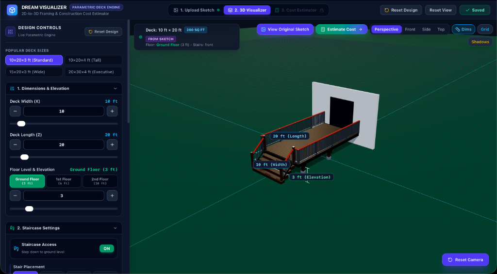
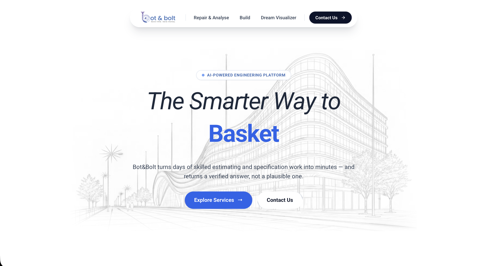
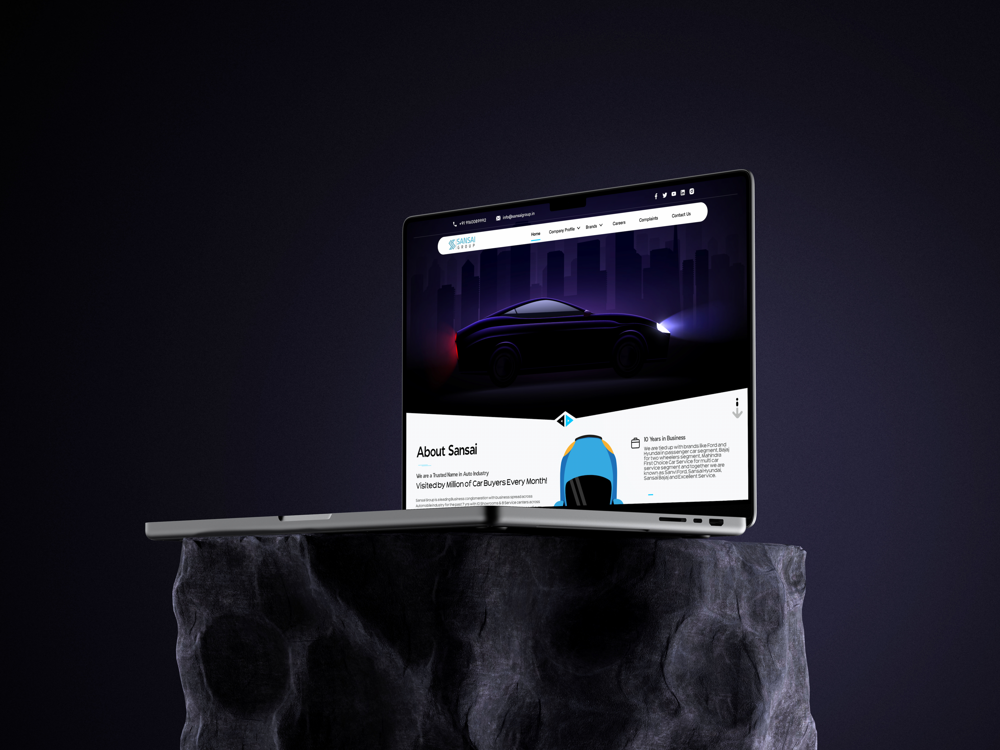
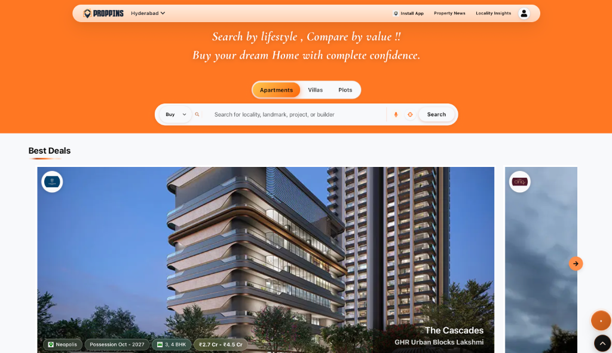

Featured Creations.
Explore interactive 3D applications, conversion-driven web designs, and structured design systems across multiple industries.

3D Visualizer
Developed a 2D-to-3D construction visualizer that converts architectural sketches into interactive 3D models using Three.js.

BotNBolt Website
Designed and developed the BotNBolt marketing website with responsive and interactive interfaces, translating UI/UX into performant frontend components.

Madroidix Technologies
Developed 10+ pages with 25+ UI components and a clear 5-section information architecture, decreasing user drop-off by 35%.

Sansai Groups
Remodeled 12+ screens across 3 platforms resolving 6 key usability issues; simplified user flows from 6 to 3 steps with 3 interactive prototypes.

Alanati Pindivantalu
Planned 14+ screens across 6 product categories with 4 user journeys, decreasing decision-making steps by 30% through pain point resolution.

Mahavir Skoda
Restructured 8 pages; identified 7 usability issues via heuristic evaluation and lowered navigation click depth by 40% with a 3-level structure.

Proppins
Crafted 40+ screens with 2 distinct user flows (buying and renting) and 10 search/filter options, reducing browsing complexity by 40%.